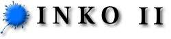

Vidu ankaŭ la originalan Inko librejon de Franko Luin.
|  |
||
| E L D O N E J O D E E L E K T R O N I K A J E S P E R A N T O - L I B R O J |
| LIBROJ | |||||
| * * * | Enciklopedio de Esperanto | 1085 p. | | | 11.7 M | |
| Wilhelm Hauff | La Karavano | 97 p. | | | 559 K | |
| Eliza Orzeszkowa | Marta | 182 p. | | | 1.2 MB | |
| Edmond Privat | Karlo | 45 p. | | | 351 K | |
| L.L. Zamenhof | Dua Libro de l’ Lingvo Internacia | 43 p. | | | 331 K | |
| ELEKTRONIKE SKANITAJ LIBROJ | |||||
| Kazimierz Bein (Kabe) | Internacia Krestomatio | 112 p. | | | 45.7 MB | |
| Kazimierz Bein (Kabe) | Pola Antologio | 159 p. | | | 4.1 MB | |
| Kazimierz Bein (Kabe) | Vortaro de Esperanto | 188 p. | | | 46.0 MB | |
| William S. Benson | Universala Metodo de Esperanto | 560 p. | | | 45.9 M | |